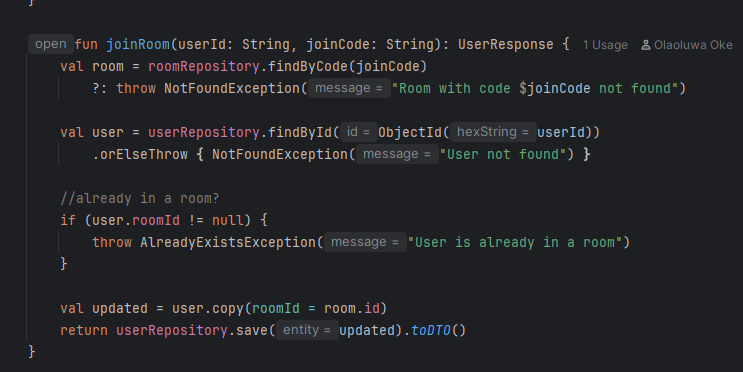

Day 2 (Part 1) - User Entity, Password Encoder , BcryptPasswordEncoder
Olaoluwa Oke| 14 June 2023
I think I must’ve skipped over the User entity in my earlier notes. That’s probably because I wrote it on Day One — fast. Mostly because I had already written something nearly identical for my bookmarking app, Tabitha.The style carried over nicely. And with the ERD already sketched out, this really wasn’t uncharted territory.
The User entity is pretty standard:
id
firstName
email
password
roomid
role
joinedAt
isActive
I also created a Role enum in the same file. In the UserRepository, I exposed two queries:
findByEmailIgnoreCase
findByRoomId (We’ll come back to why later.) So why am I talking about the User entity now?
Authentication’s around the corner and io wanted to just lay the foundation for that
Password Encoding
You’ve probably heard that passwords shouldn’t be stored in plain text for obvious reasons ( if you get hacked , the bad actors have access to all the account passwords). Well, Back in the day, people encoded passwords, but those fell to rainbow tables. Now, we use one-way hashingSpring offers a few options, but I went with the popular one: BCryptPasswordEncoder.
It’s the guy in town now, and it does the job. I wrote two simple methods:
encode(rawPassword) matches(rawInput, hashedPassword)That’s all for now. You just encode what comes in and compare it to what’s saved. Like I said, deeper security discussion comes later.
User Service Layer
Here, I injected two dependencies:(UserRepository,RoomRepository) and i had methods likeCreate userDeactivate user (isActive attribute)Update UserGetUsersInARoomJoinARoom - made sure you can only join a room once

(DI in Kotlin is pleasantly smooth compared to Java, by the way.)
Why inject RoomRepository? , it's not like i cannot inject what i want , or maybe the fact that i needed to get users in a room but , I’ll explain in the next entry
Page 1 of 1
© Word Aglow Parish 2023